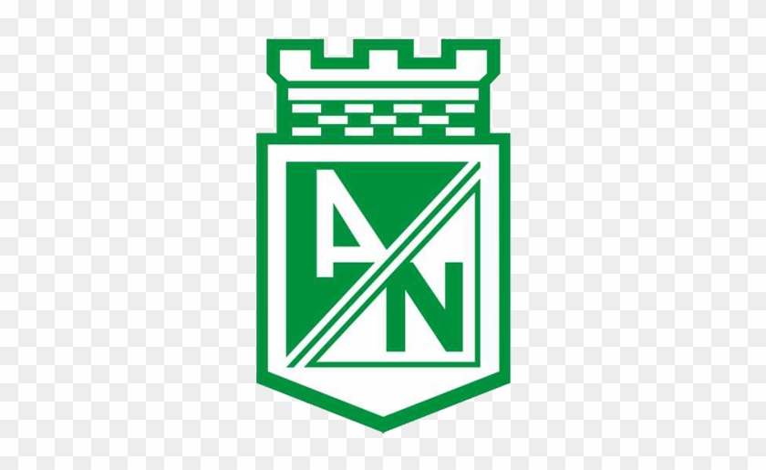

El Atlético Nacional fue fundado oficialmente el 30 de abril de 1947, con el nombre de Club Atlético Municipal, por escritura pública n.º 2100 de la ciudad de Medellín[2] y fue uno de los dos equipos aceptados por la Dimayor para que representara al Departamento de Antioquia en el naciente Campeonato Profesional de Fútbol a disputarse en 1948.[3] Desde entonces, el equipo Verdolaga, conocido por apostar a la formación de jugadores colombianos, ha conseguido un total de 36 títulos oficiales, disgregados en dieciocho Ligas Dimayor, siete Copas Colombia, cuatro Superligas (siendo el más laureado en dichas competiciones), dos Copas Libertadores de América, dos Copas Merconorte, dos Copas Interamericanas, y una Recopa Sudamericana. Estos logros le dieron el mote de El Rey de Copas Colombiano.
Atlético Nacional se clasificó para la Copa Libertadores 2016 tras ganar el Torneo Finalización 2015. Conformó el Grupo 4 junto a Peñarol, Sporting Cristal y Huracán, y realizó una fase de grupos histórica, siendo el mejor primero de la competición.
Nacional demostró su dominio desde el inicio:
En octavos, Nacional se enfrentó nuevamente a Huracán. La ida en Argentina terminó 0-0. La vuelta en Medellín fue un festival de goles, con un 4-2 a favor de Nacional, gracias a los goles de Víctor Ibarbo, Jonathan Copete y un doblete de Alejandro Guerra. Es importante destacar que los dos goles de Huracán fueron los primeros que recibió Franco Armani en el torneo.
La serie de cuartos contra Rosario Central fue dramática. En la ida en Argentina, Nacional perdió 1-0 con un gol de Walter Montoya, siendo este su único partido perdido en la copa. La vuelta en Medellín fue inolvidable. Rosario Central se puso 0-2 en el global con un penal de Marco Ruben a los 7 minutos. Sin embargo, Nacional reaccionó: Macnelly Torres anotó el 1-1 antes del descanso, Alejandro Guerra marcó el 2-1, y en el tiempo de adición, Orlando Berrío selló la remontada con el 3-1 definitivo, desatando una trifulca y su expulsión.
Tras una pausa por la Copa América Centenario y con las salidas de Jonathan Copete y Víctor Ibarbo (reemplazados por Miguel Borja y Ezequiel Rescaldani), Nacional se enfrentó a São Paulo. Miguel Borja tuvo un debut soñado en la ida en el Estadio Morumbí, anotando un doblete para la victoria 2-0. En la vuelta en Medellín, a pesar de un gol inicial de Calleri para São Paulo, Borja volvió a aparecer con dos goles más (uno de penal), consolidándose como goleador del club en la competición y sellando el pase de Nacional a su tercera final de Copa Libertadores después de 21 años.
La final fue contra el sorprendente Independiente del Valle de Ecuador. La ida en Quito terminó 1-1. Orlando Berrío abrió el marcador para Nacional, pero Arturo Mina empató para los ecuatorianos en los minutos finales. La vuelta en Medellín fue el escenario de la consagración. A los 9 minutos, Miguel Borja anotó el único gol del partido tras un rebote de un tiro libre de Macnelly Torres que pegó en el palo. Con un global de 2-1, Atlético Nacional se coronó campeón de la Copa Libertadores por segunda vez en su historia, obteniendo así su cupo al Mundial de Clubes y a la Recopa Sudamericana.
 Visítanos en Nuestra Pagina WEB